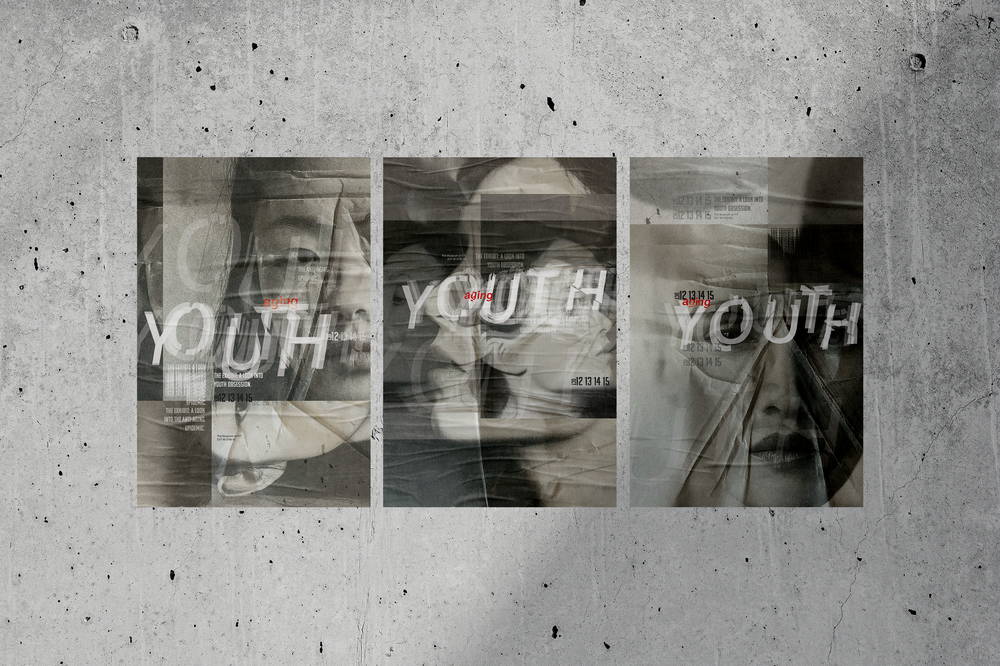
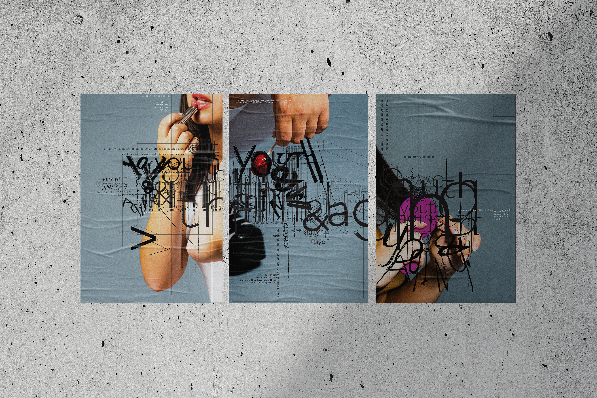
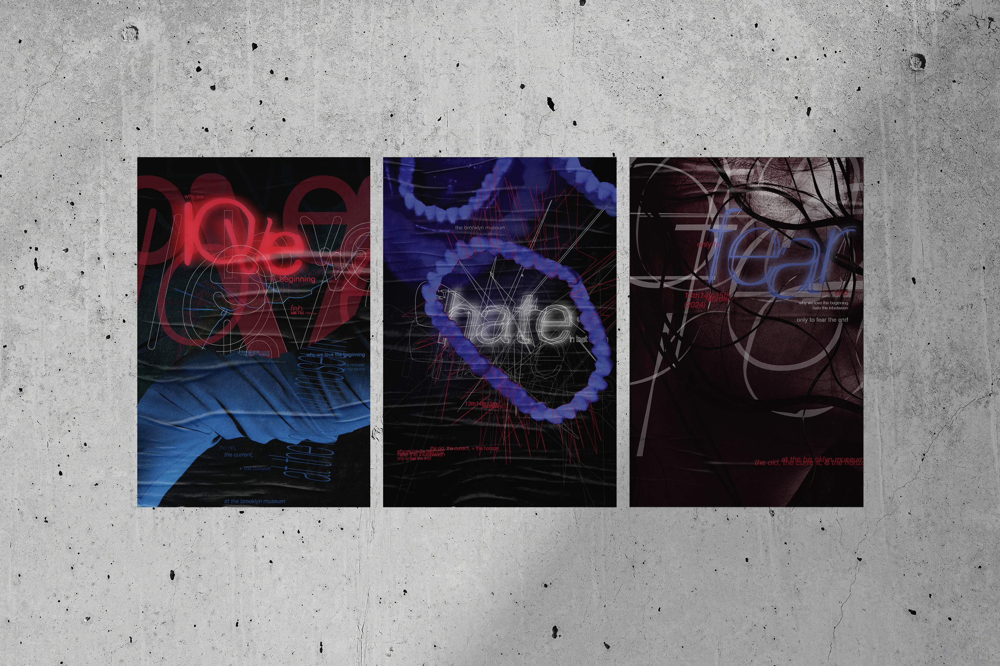

youth / aging
summary
three poster triptychs on the pressure placed on women to stay young.
concept
posters advertising an exhibit on youth obsession in our society. one idea runs through all three triptychs, the pressure placed on women to stay young, visualized a different way in each. in the youth set, fragmented, creased layering echoes the wrinkles that come with time.

01 / 03 youth

02 / 03

03 / 03 love / hate / fear
the source portraits, folded and creased by hand
process
the creases are real. I printed the portraits, then folded and manipulated the paper by hand to get a visceral sense of time wrinkling.